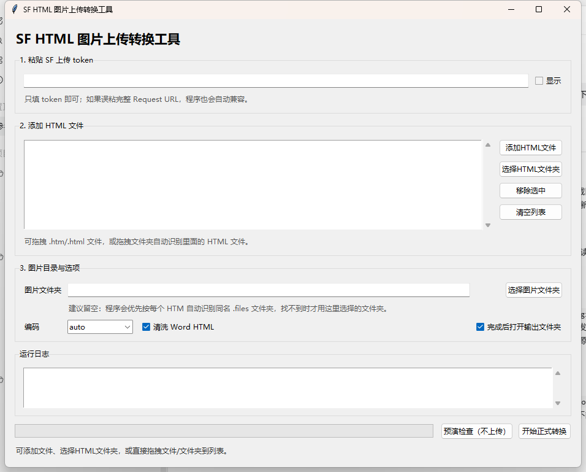

SF HTML 图片上传转换工具
批量识别 Word/网页导出的 HTML 和本地图片文件夹，上传图片到 SF，并生成可直接复制到源码模式的 TXT 内容。

主要功能
- 支持添加 HTML 文件、选择 HTML 文件夹、拖拽文件或文件夹。
- 自动识别同名 .files 图片目录，支持批量转换。
- 生成 TXT 内容，方便直接复制到 SF 富文本源码模式。
- 预演检查不上传，正式转换才调用 SF 上传接口。
批量识别 Word/网页导出的 HTML 和本地图片文件夹，上传图片到 SF，并生成可直接复制到源码模式的 TXT 内容。
